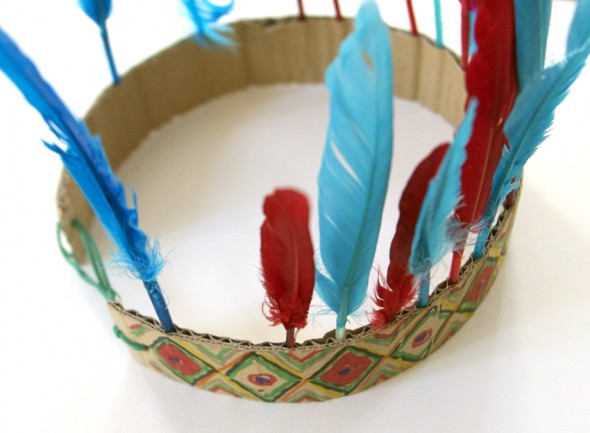

In 5 Min ein Indianer! Schneide einen ca. 3cm breiten Streifen aus Karton (vertikal zur inneren Welle). Male diesen Streifen auf einer Seite an und stecke Federn in die Welle. Benutzte ein Gummiband um den Kopfschmuck zu schließen.


